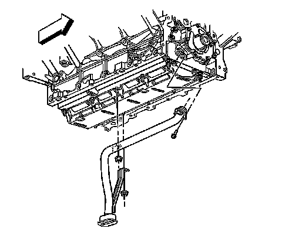
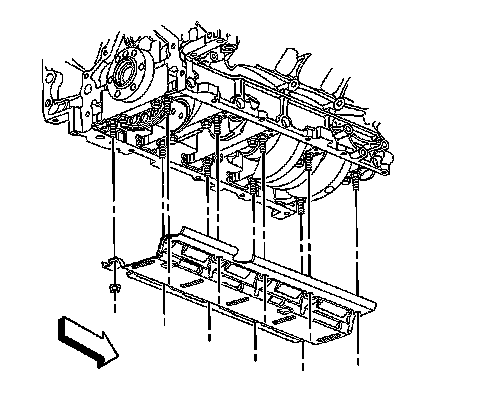
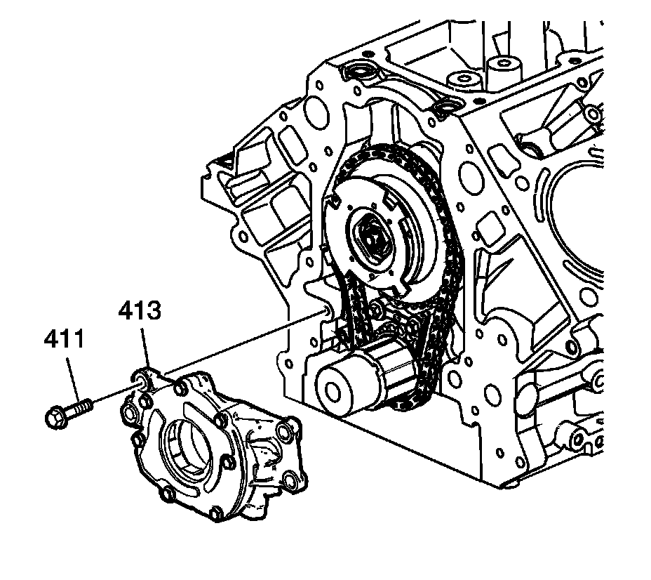

Oil Pump: Service and Repair
Oil Pump, Screen, and Crankshaft Oil Deflector Replacement (RPOs LY6/L76/L92)
Removal Procedure

1. Remove the oil pan.
2. Remove the engine front cover.
3. Remove the oil pump screen bolt and nuts.
4. Remove the oil pump screen with O-ring seal.
5. Remove the O-ring seal from the pump screen.
6. Discard the O-ring seal.

7. Remove the remaining crankshaft oil deflector nuts.
8. Remove the crankshaft oil deflector.

9. Remove the oil pump bolts (411).
Important: Do not allow dirt or debris to enter the oil pump assembly, cap end as necessary.
10. Remove the oil pump (413)
Installation Procedure
Important: Inspect the engine block oil galley passages. These areas must be free and clear of debris or restrictions.
1. Align the splined surfaces of the crankshaft sprocket and the oil pump drive gear and install the oil pump (413).
2. Install the oil pump (413) onto the crankshaft sprocket until the pump housing contacts the face of the engine block.
Notice: Refer to Fastener Notice.
3. Install the oil pump bolts (411).
Tighten the bolts to 25 N.m (18 lb ft).
4. Position the crankshaft oil deflector and install the nuts until snug.
5. Lubricate a NEW oil pump screen O-ring seal with clean engine oil.
6. Install the NEW O-ring seal onto the oil pump screen.
Important: Push the oil pump screen tube completely into the oil pump prior to tightening the bolt. Do not allow the bolt to pull the tube into the pump.
7. Align the oil pump screen mounting brackets with the correct crankshaft bearing cap studs.
8. Install the oil pump screen.
9. Install the oil pump screen bolt and nuts.
1. Tighten the bolt to 12 N.m (106 lb in).
2. Tighten the nuts to 25 N.m (18 lb ft).
10. Install the engine front cover.
11. Install the oil pan.